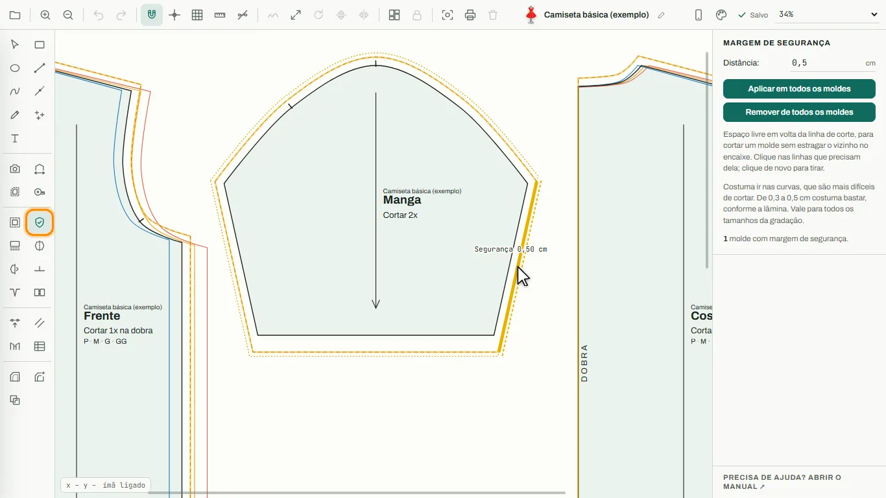
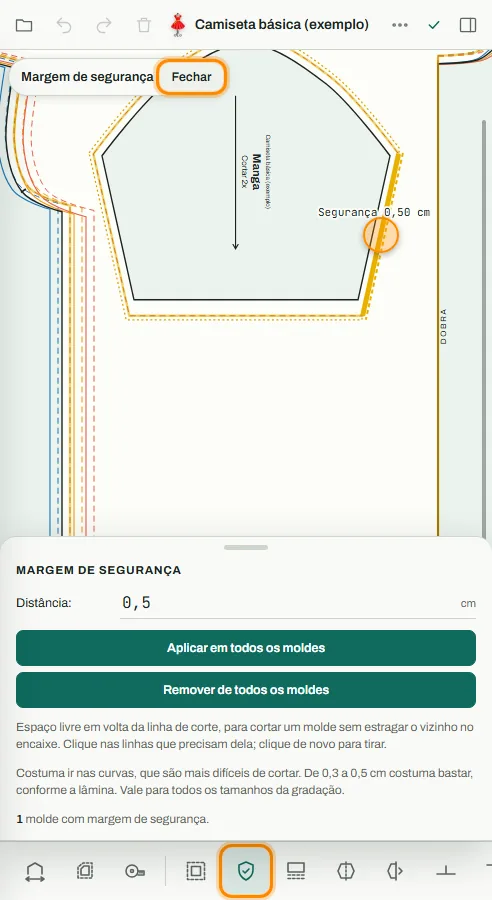
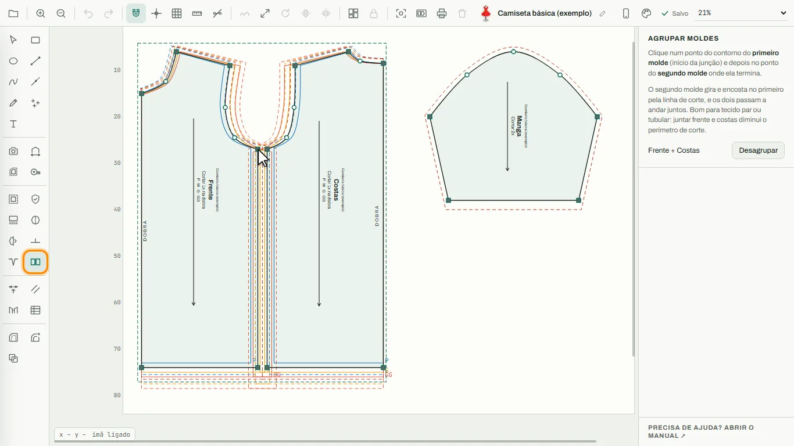
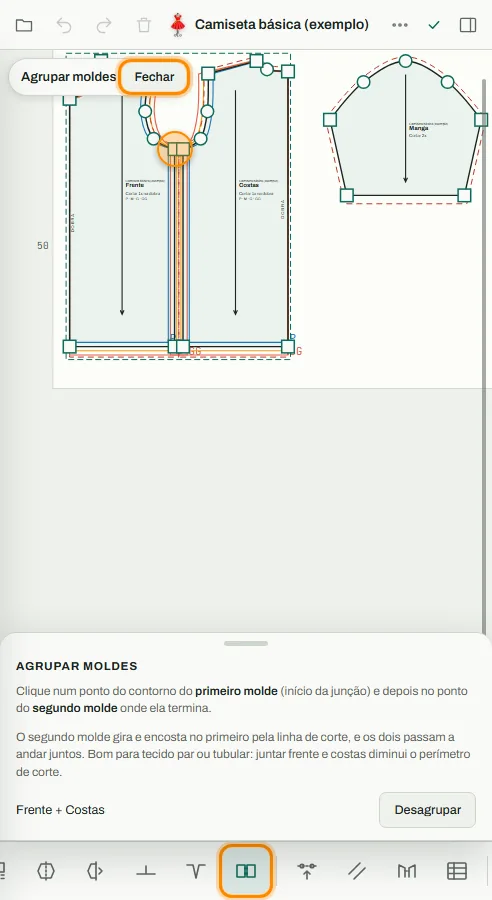
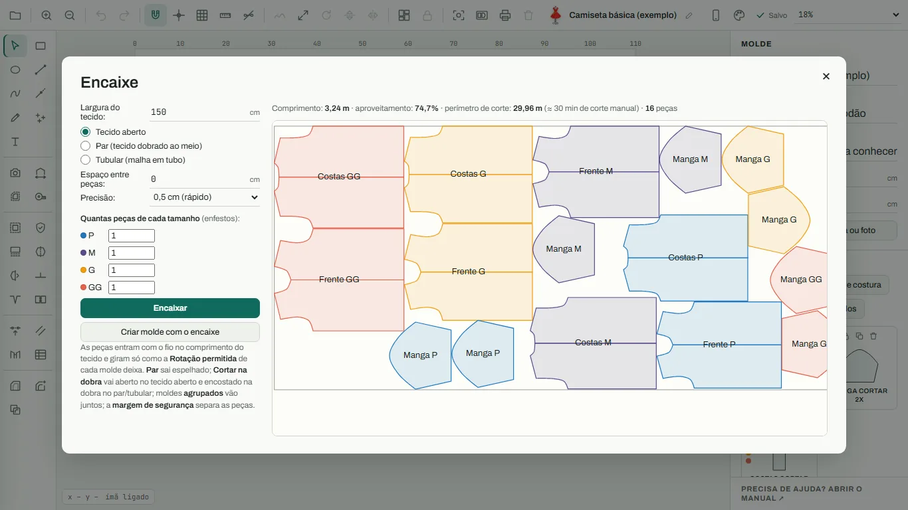
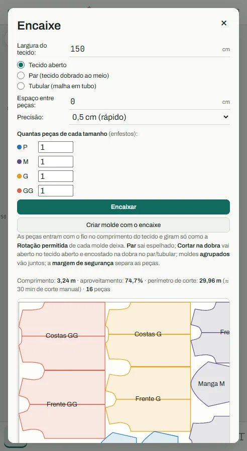

Manual do Ateliê de Moldes
Como usar cada ferramenta, no computador e no celular.
Nas fotos, a ferramenta usada aparece com contorno laranja. A seta indica onde clicar no computador; o círculo laranja indica onde tocar no celular. Na lupa do celular aparece ampliado o que está embaixo do dedo.
Começando
Barras e modos de tela
O editor tem a barra de ferramentas (à esquerda no computador, embaixo no celular), a área de desenho no meio e o painel de opções (à direita no computador, numa gaveta no celular).


No computador
- Os números na foto indicam os botões da barra de cima: 1 Meus moldes · 2 Mais zoom · 3 Menos zoom · 4 Desfazer · 5 Refazer · 6 Ímã · 7 Guias · 8 Grade · 9 Mostrar medidas · 10 Esconder pontos · 11 Suavizar curvas · 12 Redimensionar · 13 Rotacionar · 14 Inverter na vertical · 15 Inverter na horizontal · 16 Reorganizar painéis · 17 Travar · 18 Fotografar moldes · 19 Imprimir · 20 Remover · 21 Modo celular · 22 Tema.
- A grade vem desligada (folha lisa). O botão Grade (8) liga e desliga; o ímã e as réguas funcionam com ela desligada.
- Gire a rodinha do mouse para dar zoom. Segure Espaço (ou o botão do meio do mouse) e arraste para mover a tela. Com bastante zoom aparecem barras de rolagem discretas na borda: arraste-as para mover a vista.
- Passe o mouse sobre qualquer botão para ver o nome dele na hora. Os atalhos de teclado são os mesmos do molde.me (aperte ? para ver a lista); o ímã é a tecla I e Ctrl+K / Ctrl+L invertem na vertical e na horizontal.
- O botão Tema (22) abre a lista de temas: Automático, Claro, Escuro, Roxo escuro e Cinza clássico.
No celular
- Na barra de cima ficam só 1 Meus moldes · 2 Desfazer · 3 Refazer · 4 Remover · 5 Mais ações (⋯) · 6 Painel.
- Toque em ⋯ para abrir a folha Mais ações, com zoom, ímã, guias, grade, girar, inverter, travar, imprimir, exportar, tema e outras.
- Arraste com um dedo para mover a tela (na ferramenta Selecionar). Use dois dedos para dar zoom.
- A etiqueta no canto mostra a ferramenta ativa. Toque em Opções para abrir as opções dela e em Fechar para esconder.
Dica: O modo celular liga sozinho em telas de celular. Para trocar à mão: botão de celular/computador na barra de cima, ou Meus moldes → Modo da tela.
Começando
Novo molde
Cria um projeto novo, com nome, tecido e o tamanho da área de impressão.


No computador
- Clique na pasta (canto superior esquerdo) → + Novo molde.
- Preencha Nome/Referência (obrigatório), tecido e observação.
- Ajuste a largura e a altura da área de impressão.
- Se quiser, arraste a ficha técnica ou uma foto da peça para o quadro da direita.
- Clique em Criar Molde.
No celular
- Toque na pasta → + Novo molde.
- Preencha os campos e toque em Criar Molde.
Dica: A área de impressão é só a referência da folha: dá para desenhar fora dela.
Começando
Meus moldes
Lista os projetos salvos neste navegador e dá acesso a novo molde, exportar, importar (projeto .json ou moldes .dxf) e modo da tela.


No computador
- Clique na pasta.
- Clique no nome de um molde para abri-lo.
- Excluir pede um segundo clique para confirmar.
- Importar moldes abre DXF (R12 ou AAMA), DXF + RUL (escolha os dois arquivos juntos para trazer a gradação) ou PLT/HPGL como um molde novo: contornos fechados viram moldes, o resto vira linhas de construção.
No celular
- Toque na pasta. O mesmo menu aparece por cima da tela.
Dica: Os moldes ficam salvos no navegador. Para guardar uma cópia, use Exportar → Projeto (.json).
Desenho
Selecionar (V)
Seleciona, move e edita as peças e os pontos.


No computador
- Clique numa peça para selecioná-la e arraste para mover.
- Arraste os quadradinhos e bolinhas para editar os pontos.
- Duplo clique numa linha cria um ponto. Duplo clique num ponto liga ou desliga o ponto de controle (fica cheio): os pontos de controle dividem o molde em linhas, e margem de costura, fita métrica, redefinir perímetro e redistribuir piques agem de um ponto de controle até o outro. Canto e Curva ficam no painel do ponto.
- Alças: com um ponto de curva escolhido, ligue Exibir alças do ponto e arraste as bolinhas para mudar a curva (Alças simétricas move as duas juntas; Alças automáticas desfaz). Manter curvatura faz as curvas vizinhas não mudarem de forma quando você move o ponto.
- Sobrepor moldes: dê dois cliques com o botão direito num ponto do molde; ele passa a seguir o mouse por esse ponto. Clique num ponto do outro molde para colar ponto com ponto (Esc cancela). No celular, use Sobrepor por este ponto, no painel do ponto.
- Shift+clique em outros pontos da mesma forma para escolher vários. Arrastar um deles move todos; em Deslocar, informe X e/ou Y (marque a caixinha de cada um) e clique em Deslocar para mover os pontos escolhidos por essa medida.
- Com um ponto escolhido, o painel traz Suavizar curvas (num trecho de dois pontos, vira reta), Subdividir curvas e Redistribuir piques, que agem na curva desse ponto.
- Para prender uma linha ou marcação ao molde: clique nela, Shift+clique no molde e use Adicionar ao molde.
- Solte um ponto em cima de outro da mesma linha para uni-los.
- Arraste numa área vazia para selecionar várias peças.
No celular
- Toque numa peça para selecioná-la e arraste para mover.
- Arraste os pontos com o dedo; a lupa mostra o detalhe.
- Toque em Opções para ver as propriedades da peça.
Dica: Com uma peça selecionada, o painel mostra posição, tamanho, nome, quantidade de cortes, fio, Par (nenhum, horizontal ou vertical), tecido, o que exibir no molde (referência, tecido, quantidade) e encolhimento, com o botão Aplicar a todos os painéis do mesmo tecido. Em Ações: Aplicar em todos os painéis copia as propriedades marcadas para os outros moldes; Subdividir curvas refaz os pontos de uma curva (por quantidade ou distância); Remover todos os piques limpa o molde.
Desenho
Retângulo (R)
Desenha um retângulo de construção.


No computador
- Escolha Retângulo.
- Clique e arraste de um canto ao outro. A largura aparece em cima e a altura do lado.
- Segure Shift para um quadrado e Alt para desenhar a partir do centro.
No celular
- Escolha Retângulo na barra de baixo.
- Arraste o dedo de um canto ao outro; a lupa mostra a ponta.
Dica: Com o ímã ligado, os cantos encaixam na grade (0,5 cm, ou 1 mm com bastante zoom) e nos pontos existentes.
Desenho
Elipse (O)
Desenha uma elipse com só 4 pontos de curva, fácil de ajustar e de dar margem.


No computador
- Escolha Elipse.
- Clique e arraste a caixa da elipse.
- Segure Shift para um círculo e Alt para desenhar a partir do centro.
No celular
- Escolha Elipse e arraste o dedo.
Dica: Depois, use Selecionar para ajustar os 4 pontos, ou L e A no painel para medidas exatas.
Desenho
Linha (L)
Desenha uma linha reta por vez, que se prende às linhas existentes para tudo ficar conectado.


No computador
- Clique e arraste, ou clique no início e depois no fim.
- O quadrado indica que o cursor está preso numa ponta; o losango, preso no meio de uma linha.
- Segure Shift para travar em 0°, 45° ou 90°.
No celular
- Arraste o dedo do início ao fim da linha.
- A lupa mostra quando a ponta está presa em outra linha.
Dica: Linhas bem conectadas são o que permite usar Gerar molde depois.
Desenho
Curva (C)
Desenha uma curva suave passando pelos pontos clicados.


No computador
- Clique para adicionar pontos de curva.
- Clique no primeiro ponto para fechar a forma, ou dê duplo clique (ou Enter) para terminar aberta.
No celular
- Toque para adicionar pontos (cada ponto entra quando você levanta o dedo).
- Use os botões Concluir curva ou Fechar forma, nas Opções.
Desenho
Estender linha (E)
Prolonga uma linha reta até a próxima linha ou molde, ou na medida que você arrastar.


No computador
- Passe o mouse numa linha reta: um tracejado mostra até onde ela vai. Clique e a ponta mais perto se estende até encostar no primeiro elemento à frente.
- Para escolher a medida, arraste a partir da ponta. O acréscimo aparece em cm.
No celular
- Toque na linha para estender até encostar, ou arraste a ponta com o dedo.
Desenho
Mão livre (F)
Desenho livre que vira uma curva com pontos de controle.


No computador
- Desenhe arrastando. O comprimento total aparece enquanto você desenha.
- Termine perto do início para fechar a forma.
- Arraste os pontos para ajustar; duplo clique num ponto liga ou desliga o ponto de controle.
No celular
- Desenhe com o dedo e ajuste os pontos em seguida.
Dica: Suavizar curvas (barra de cima) remove pontos em excesso de um traço tremido.
Desenho
Marcar pontos (P)
Marca pontos de referência, livres ou a uma medida exata de outro ponto.


No computador
- Livre: clique onde o ponto deve ficar.
- L e A: clique num ponto de referência, informe L (largura) e A (altura) e clique para o lado onde o ponto deve ficar.
- P: o ponto anda pelo contorno a partir de um ponto do molde, no sentido do clique.
- C: o ponto fica a essa distância da referência, na direção do mouse (raios e ângulos).
- Esc troca a referência.
No celular
- Escolha o modo nas Opções, toque na referência e depois no lado onde o ponto deve ficar.
Dica: Nos modos L/A e C, o ponto novo vira a próxima referência, para marcar uma sequência.
Desenho
Texto (T)
Escreve textos direto no desenho.


No computador
- Escolha o tamanho nas opções (de 0,2 cm a 10 cm).
- Clique em qualquer lugar: uma caixa de texto aparece ali, já pronta para digitar.
- Enter ou clicar fora confirma; Esc cancela.
- Clique num texto existente (com a ferramenta Texto) para editá-lo.
- Para mover, use Selecionar e arraste o texto. Duplo clique no texto volta para a ferramenta Texto já editando.
No celular
- Toque em Texto e escolha o tamanho em Opções.
- Toque onde o texto deve ficar: a caixa abre com o teclado do celular.
- Digite e toque em Enter (ou toque fora) para confirmar.
- Para mover, use Selecionar e arraste o texto.
Dica: Apagar todo o conteúdo da caixa e confirmar remove o texto.
Moldes
Digitalização de moldes
Transforma a foto de um molde de papel em molde digital.


No computador
- Fotografe o molde sobre um fundo escuro e liso, com uma régua na foto.
- Clique na ferramenta e escolha a foto.
- 1. Escala: arraste sobre uma medida conhecida da foto, digite o valor real e clique em Aplicar escala.
- 2. Contorno: clique em Detectar contorno, ou contorne à mão com Linha e Curva.
- Use Gerar molde no contorno.
No celular
- Toque na ferramenta e escolha a foto (pode tirar na hora).
- Siga os mesmos passos pelas Opções.
Dica: Confira as medidas depois: a detecção automática funciona melhor com bom contraste.
Moldes
Redefinir perímetros (X)
Muda o comprimento de uma linha ou curva para um valor exato.


No computador
- Clique na linha: a curva inteira, de um ponto de controle (canto) ao outro, fica destacada.
- Digite o novo comprimento.
- Escolha o modo: Bidirecional (estica as duas pontas), Unidirecional (só uma ponta: primeiro ou último ponto) ou Manter extremos (curva a linha sem mover as pontas). Os pontos vermelhos mostram o que vai se mexer.
- Clique em Redefinir.
No celular
- Toque na linha, abra as Opções, digite o comprimento e toque em Redefinir.
Moldes
Gerar molde (M)
Transforma uma área fechada por linhas de construção numa peça de molde.


No computador
- Clique nas linhas que formam o contorno, uma por uma (ou clique dentro da área fechada).
- Quando o contorno fecha, a área fica preenchida.
- Preencha nome, tamanho do texto, sentido do fio, rotação, quantidade, par e dobra.
- Clique em Gerar molde.
No celular
- Toque nas linhas do contorno, abra as Opções e toque em Gerar molde.
Dica: Folgas pequenas entre as linhas (até cerca de 0,6 cm) são emendadas automaticamente. A seta do fio sai com uma ponta; para duas pontas, selecione o molde e ligue ⇆ em Sentido do fio.
Moldes
Fita métrica (N)
Mede linhas, margens e distâncias.


No computador
- Passe o mouse sobre uma linha ou margem para ver a medida, de um ponto de controle até o outro.
- Cada clique cria uma régua emendada na anterior, com o total. Duplo clique ou Enter termina; Esc apaga.
- Adicionar valor põe a sequência na tabela; Shift+clique numa linha põe o comprimento dela em cada tamanho.
- Entre os valores há um sinal: clique para trocar a conta (+ − × ÷). + Número acrescenta um número, por exemplo para multiplicar meio decote por 2. O Resultado sai por tamanho.
No celular
- Toque para criar as réguas e use Encerrar réguas nas Opções.
- No celular não há passar o mouse: use as réguas.
Moldes
Margem de costura (1)
Adiciona margem de costura às linhas do molde, para fora ou para dentro.


No computador
- Defina a margem Inicial (e Final, se ela variar ao longo da linha) e o acabamento: Reto, Chanfrado ou Sem acabamento (o canto da margem fica recortado até o ponto do molde, bom para bolsos).
- Passe o mouse sobre uma linha: com o mouse fora do molde a margem vai para fora; dentro, para dentro.
- Clique para aplicar. Cada margem vale para a linha entre dois pontos de controle (os pontos cheios): numa curva com muitos pontos, um clique cobre a curva toda; a elipse tem 4 pontos de controle, um em cada quarto.
- Para tirar a margem de um lado só, clique em cima da linha tracejada da margem desse lado: ela fica vermelha antes do clique.
- Com um painel escolhido: Aplicar costura em todo o painel, Remover somente a costura, Remover costura e bainha, e Aplicar pontilhado ao painel, que junta a margem ao molde (a linha de corte vira o contorno, pontilhado).
No celular
- Encoste o dedo perto da linha, do lado onde a margem deve ficar. A lupa mostra a prévia; solte para aplicar.
- Para tirar a margem de um lado, encoste o dedo na linha tracejada desse lado (fica vermelha) e solte.
Moldes
Margem de segurança (S)
Espaço livre em volta da linha de corte, para cortar um molde sem estragar o vizinho no encaixe.


No computador
- Digite a Distância nas opções (de 0,3 a 0,5 cm costuma bastar, conforme a lâmina).
- Com a ferramenta ativa, o contorno de corte dos moldes fica amarelo.
- Clique nas linhas que precisam da margem; clique de novo para tirar.
- Aplicar em todos os moldes põe a margem no contorno inteiro de todas as peças; Remover de todos os moldes tira.
No celular
- Toque na ferramenta, defina a Distância em Opções e toque nas linhas (a lupa ajuda a mirar).
Dica: Costuma ir nas curvas, que são mais difíceis de cortar. A margem aparece como um pontilhado amarelo, não sai na impressão e vale para todos os tamanhos. Reorganizar painéis respeita esse espaço.
Moldes
Bainha
Margem da barra com dobras e piques.


No computador
- Defina a largura, o número de dobras e se quer piques nas dobras.
- Clique na linha da barra.
No celular
- Ajuste nas Opções e toque na linha da barra.
Dica: A margem da barra fica largura × dobras.
Moldes
Desdobrar molde
Espelha a peça para gerar a peça inteira.


No computador
- Clique numa linha reta para espelhar sobre ela, ou dentro de uma peça cortada na dobra.
No celular
- Toque na linha ou dentro da peça.
Moldes
Dobrar molde
Dobra uma peça simétrica ao meio, no eixo vertical, e marca como cortar na dobra.


No computador
- Clique dentro de uma peça simétrica.
No celular
- Toque dentro da peça.
Dica: A peça precisa ter pontos sobre o eixo central, como as peças desdobradas.
Moldes
Marcar pique (4)
Marca piques no contorno e marcações internas, um a um ou vários de uma vez.


No computador
- Escolha o ícone: Traço pequeno, Traço médio, T, V, Pique contínuo (um V no próprio contorno, cortado no mesmo trajeto da máquina), Seta, Texto ou Tamanho no contorno, e Cruz, Círculo, Ponto ou Texto dentro. Largura e Altura em mm. Clique no contorno para um pique ou dentro do molde para uma marcação.
- Medida e Distância: o pique é medido a partir do ponto mais perto do clique, no sentido do clique. P anda pelo contorno, L mede na horizontal, A na vertical e C em linha reta (um raio a partir do ponto).
- Tamanho: clique num ponto; o pique aparece na posição de cada tamanho da gradação, com o nome.
- Redistribuir piques: ligue a opção, escolha quantidade ou distância e clique numa linha; a prévia mostra os piques estimados.
- Reaplicar em todos os piques troca o formato de todos os piques do molde de uma vez.
No celular
- Encoste o dedo, deslize até a linha olhando a lupa e solte.
- As mesmas opções (P, Tamanho, Redistribuir, Reaplicar) ficam nas Opções.
Dica: Remover todos os piques fica no painel do molde, com Selecionar. No DXF, o pique contínuo sai recortado no próprio contorno de corte, para a máquina fazer no mesmo trajeto.
Moldes
Pence (D)
Insere uma pence no contorno.


No computador
- Defina abertura e profundidade.
- Clique no contorno onde fica o centro da pence.
- Com Abrir molde, a pence entra no contorno; sem essa opção, só as pernas são desenhadas por dentro.
No celular
- Ajuste nas Opções, encoste o dedo no contorno e solte.
Moldes
Agrupar moldes
Junta dois moldes pela linha de corte para cortar juntos, como em tecido par ou tubular.


No computador
- Clique num ponto do contorno do primeiro molde, onde a junção começa.
- Clique no ponto correspondente do segundo molde.
- O segundo molde gira (ou espelha, se Permitir espelhar estiver ligado) e encosta no primeiro, linha de corte com linha de corte.
- Os dois passam a se mover juntos. Com Selecionar, um clique pega o grupo; outro clique num deles pega só ele.
- Desagrupar fica no painel do molde e na lista da ferramenta.
No celular
- Toque no ponto do primeiro molde e depois no do segundo; a lupa ajuda a acertar o ponto.
Dica: Juntar frente e costas pela lateral diminui o perímetro de corte e o tempo de corte.
Ajustes
Alinhar pontos (9)
Alinha pontos na horizontal ou na vertical.


No computador
- Clique nos pontos (o primeiro é a referência).
- Escolha o sentido e clique em Aplicar.
No celular
- Toque nos pontos e use Aplicar nas Opções.
Ajustes
Linhas paralelas
Cria uma linha paralela a uma distância definida.


No computador
- Defina a distância.
- Clique perto da linha, do lado em que a paralela deve aparecer.
No celular
- Toque do lado em que a paralela deve aparecer.
Ajustes
Conferência por aproximação
Compara as linhas de duas peças que serão costuradas juntas.


No computador
- Clique na linha da peça de referência (A) e depois na da outra peça (B).
- O painel mostra os dois comprimentos e a diferença.
- Aplicar encosta a peça B na A para conferir visualmente. Menor caminho gira o mínimo possível; Por dentro sobrepõe as peças (overlock); Centralizar alinha os meios das linhas, dividindo a diferença entre as pontas (babados).
No celular
- Toque nas duas linhas e veja o resultado nas Opções.
Ajustes
Tabela de medidas
Tabela de medidas por tamanho (busto, cintura, quadril…).


No computador
- Clique em + Nova Medida e preencha os valores de cada tamanho.
- Fixar mantém a tabela visível sobre o desenho.
No celular
- Abra as Opções para editar a tabela.
Gradação
Gradação (5)
Define os tamanhos e quanto cada ponto anda em cada um.


No computador
- Use + para criar tamanhos, com nome e cor. O tamanho novo já nasce graduado, repetindo o salto entre os dois últimos tamanhos.
- Clique num ponto do molde e informe X e Y (cm) para cada tamanho.
- Zerar ponto tira a gradação do ponto; Remover gradação do painel tira a do molde inteiro.
- Agrupar gradação: se os tamanhos estão em moldes separados (com a mesma quantidade de pontos), selecione todos com Selecionar (Shift+clique) e use Agrupar gradação; diga o tamanho de cada molde e a referência (centro ou um ponto). O molde base fica e os outros viram a gradação dele.
No celular
- Toque no ponto e preencha X e Y nas Opções.
Dica: Os tamanhos aparecem como contornos coloridos em volta da peça. Para escondê-los, use a camiseta na miniatura do molde (um molde) ou Esconder gradação de todos, no painel com nada selecionado.
Gradação
Gradação automática (A)
Calcula a gradação de toda a peça a partir de quanto ela cresce.


No computador
- Clique na peça.
- Informe quanto a peça cresce em largura e altura em cada tamanho.
- Clique em Aplicar na peça.
No celular
- Toque na peça e use Aplicar na peça nas Opções.
Gradação
Copiar gradação
Copia a gradação de um ponto para outros.


No computador
- Escolha copiar X, Y ou os dois.
- Clique no ponto de origem e depois nos pontos de destino.
No celular
- Toque no ponto de origem e depois nos de destino.
Barra de cima
Redimensionar
Ajusta o tamanho da forma arrastando alças.


No computador
- Selecione a peça e ligue Redimensionar.
- Arraste um canto para mudar largura e altura (Shift mantém a proporção), ou uma alça do meio para mudar só um lado.
- Para valores exatos, use L e A no painel.
No celular
- No celular, Redimensionar fica na barra de baixo, ao lado de Selecionar.
Barra de cima
Rotacionar
Gira a seleção.


No computador
- Selecione a peça, clique em Rotacionar, digite o ângulo ou use −90°, +90° e 180°.
No celular
- Toque em ⋯ → Rotacionar.
Dica: Inverter na vertical e na horizontal ficam ao lado, na barra de cima (no celular, em ⋯).
Saída
Encaixe
Planeja o corte: coloca as peças de todos os tamanhos no tecido e mostra quanto tecido vai e quanto tempo de corte.


No computador
- Clique em Encaixe na barra de cima (no celular, em ⋯).
- Informe a largura do tecido e o enfesto: tecido aberto, par (dobrado ao meio) ou tubular (malha em tubo).
- Diga quantas peças de cada tamanho vão ser cortadas e, se quiser, um espaço entre as peças.
- Clique em Encaixar. O resultado mostra o comprimento de tecido, o aproveitamento, o perímetro de corte e o tempo aproximado de corte manual (cerca de 1 minuto por metro).
- Criar molde com o encaixe abre o encaixe como um molde novo, para imprimir em Plotter (largura do rolo) ou exportar em DXF.
No celular
- Toque em ⋯ → Encaixe, preencha os campos e toque em Encaixar.
Dica: As peças entram com o fio no comprimento do tecido e só giram como a Rotação permitida deixa. Par sai espelhado; Cortar na dobra vai aberto no tecido aberto e encostado na dobra no par e no tubular (o tubo tem duas dobras); moldes agrupados vão juntos e a margem de segurança separa as peças.
Saída
Imprimir
Gera um PDF em tamanho real, dividido em folhas numeradas para colar.


No computador
- Clique em Imprimir.
- Escolha o que imprimir, o papel (A4 a A0, Carta, Ofício, Tabloide, Plotter, Customizar ou Dimensões totais), as margens e a orientação.
- Clique em Imprimir para baixar o PDF.
- Cole as folhas pela numeração coluna-linha: 1-1, 1-2… descem pela primeira coluna.
No celular
- Toque em ⋯ → Imprimir.
Dica: Na impressora, escolha tamanho real (100%), sem ajustar à página, e confira uma medida com a régua. A margem de costura sai em todos os tamanhos; ligue Mostrar área da margem de costura (painel, sem nada selecionado) para ver esse espaço e arrumar os moldes antes.
Saída
Exportar
Salva o molde em outros formatos.


No computador
- Pasta → Exportar.
- SVG (escala real), DXF em mm para plotter e máquinas de corte, ou Projeto (.json) para abrir de novo aqui.
- Escolha as propriedades que vão no arquivo: Nome do molde, Textos do molde, Margem de costura, Linhas tracejadas (de construção) e Bordas da área.
- Com gradação, escolha os tamanhos que vão no arquivo e, se quiser, marque Exportar individualmente para baixar um arquivo por tamanho.
No celular
- Pasta → Exportar.
Saída
Fotografar moldes
Gera uma imagem PNG do que está na tela.


No computador
- Clique em Fotografar moldes e use Baixar PNG ou Copiar imagem.
No celular
- Toque em ⋯ → Fotografar moldes.